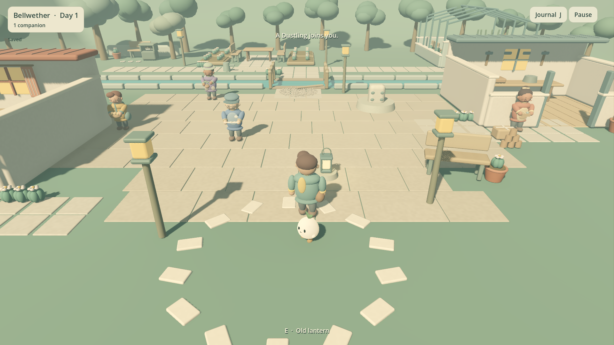
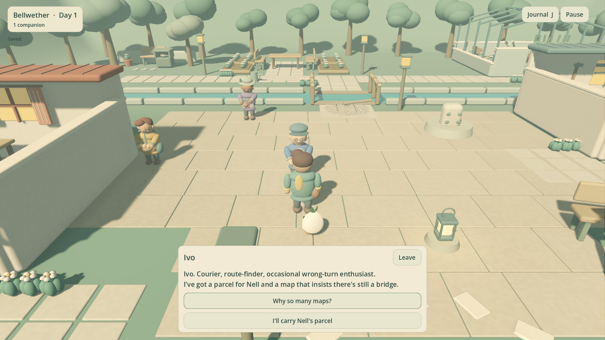
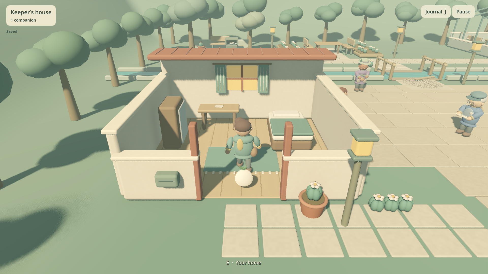
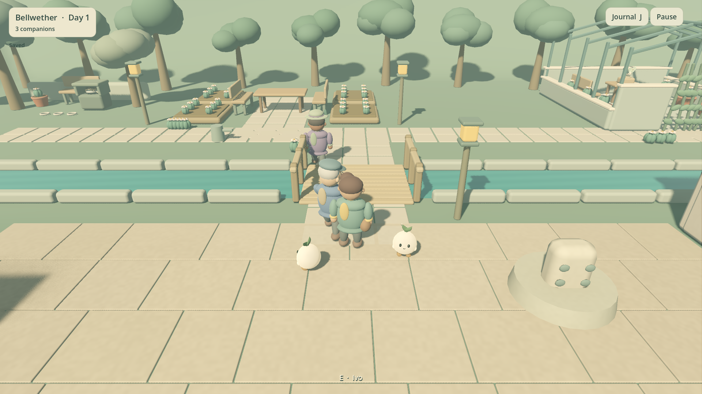
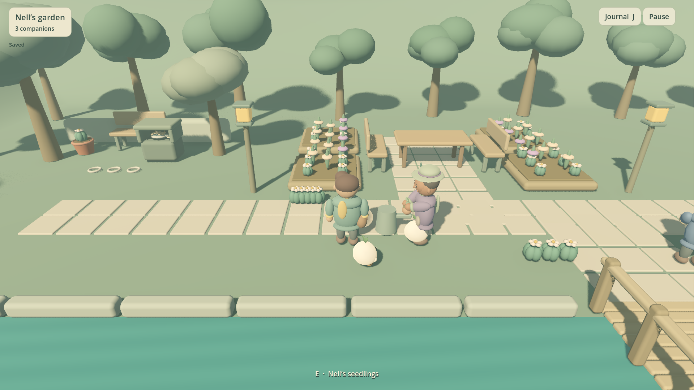
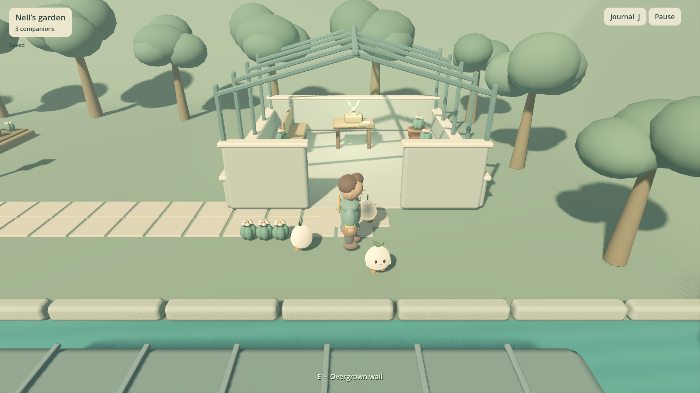
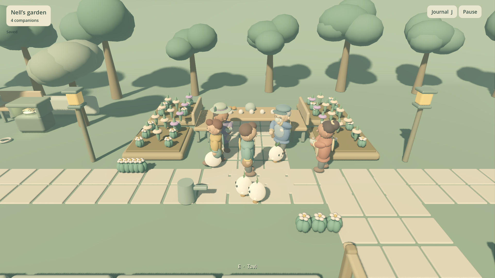

0.5.1 · BELLWETHER NEIGHBORHOOD PREVIEW
Dustlings
Make a little home. Help four neighbors bring a forgotten place back to life, with companions made from dust.
One playable neighborhood; full campaign unfinished. Mac package checks pass. Windows is exported and structurally checked, awaiting Windows execution. Human playtests: 0, owner/presentation/audio acceptance pending. Mac ad-hoc signed, unnotarized. No commercial launch or revenue claim.
22.6 seconds of actual generated-input gameplay with original game audio. Normal playback speed; source, cuts and files in the media manifest. A short preview is not a human playtest.
What changed
All four neighbors now gather for tea, with hand-attached cups and bread at the shared table. Conversations remain reachable. Resident routes recover from initial obstructions, camera sensitivity stays consistent at small windows, and damaged saves recover cleanly while retaining their original bytes.
Verified locally
Actual gameplay views

first companion
ivo
home interior
bridge after
garden
ivy after
gatheringStore draft · Distribution preparation · Playtest protocol · Changes and retained failures